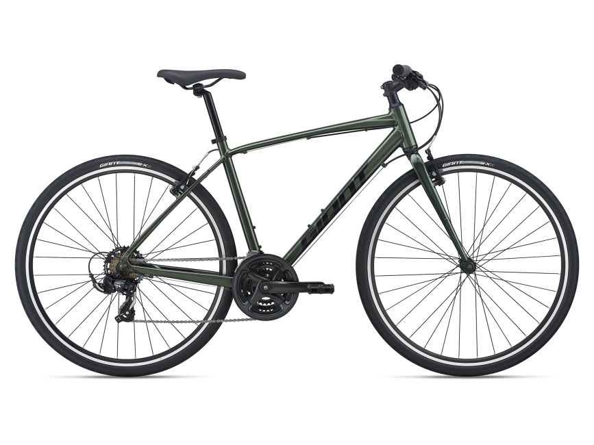
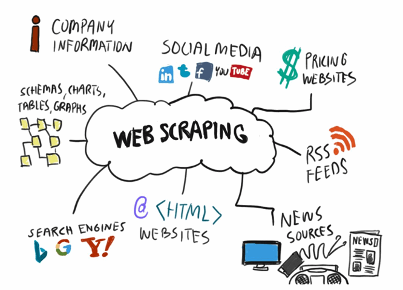
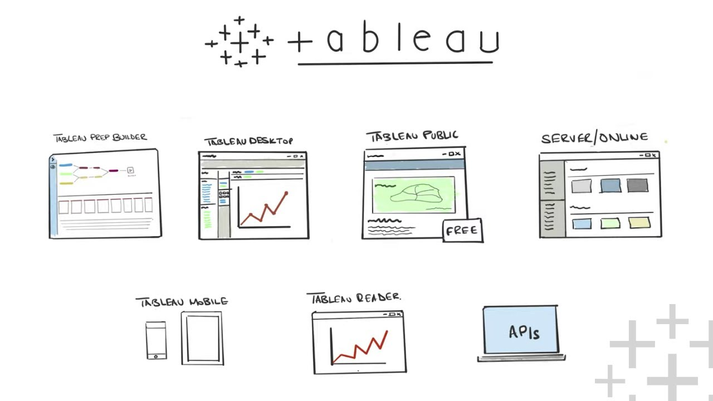

Tanskii Aleksandr Portfolio
Data Scientist with a strong proficiency in SQL and Python. Skilled in data analysis, statistical modeling, and data visualization to drive business insights and decision-making. LinkedIn
Video Games Sales Analysis
With MYSQL
Citi bike
Pandas EDA Project
Citi Bike is New York's bike share system, and the largest in US. Citi Bike launched in May 2013 and has become an essential part of the transportation network. It's fun, efficient and affordable – not to mention healthy and good for the environment. Citi Bike is available for use 24 hours/day, 7 days/week, 365 days/year, and riders have access to thousands of bikes at hundreds of stations across Manhattan, Brooklyn, Queens and Jersey City.
Israeli Vehicles
Pandas EDA Project
The following project is intended to deep dive into Israel's car lake with the help of Pandas. The lake contains official information of license numbers of the private active vehicles from the year of manufacture 1996 and above and the license numbers of the commercial active vehicles weighing up to 3,500 kg from the year of manufacture 1998 and above.
Web scraping
Python Project
Laptop hard drives
Web scraping, web harvesting, or web data extraction is data scraping used for extracting data from websites. While web scraping can be done manually by a software user, the term typically refers to automated processes implemented using a bot or web crawler. It is a form of copying in which specific data is gathered and copied from the web, typically into a central local database or spreadsheet, for later retrieval or analysis.
Tableau Projects
Tableau is a widely used business intelligence (BI) and analytics software trusted by companies like Amazon, Experian, and Unilever to explore, visualize, and securely share data in the form of Workbooks and Dashboards. With its user-friendly drag-and-drop functionality it can be used by everyone to quickly clean, analyze, and visualize your team’s data.
Telegram Bot (can be launched by request)
Discover the ultimate Telegram bot designed to uplift and entertain! This versatile bot offers:
- Motivational Quotes: Get inspired with a daily dose of motivational quotes tailored to keep you positive and focused.
- Movie Recommendations: Never run out of things to watch! Find new movies to enjoy, handpicked to suit your preferences.
- Interactive Conversations: Powered by the advanced Llama2 LLM model, engage in meaningful and intelligent conversations, making your experience more enriching and interactive.
Regression Project - Predicting the Amount of Loan Granted
This project focuses on predicting the loan amount that will be granted to applicants using regression analysis. By analyzing various features such as income, credit history, and employment status, the model aims to provide accurate predictions to assist in the loan approval process. Click the image to explore the full project on GitHub.

Classification Project - Car Claims Classification
This project focuses on building a classification model to detect fraudulent car insurance claims. It addresses the challenge of imbalanced data and implements various machine learning techniques to achieve accurate and reliable predictions. The model is evaluated using standard metrics to ensure its effectiveness.
Classification Project - Credit Card Fraud Detection
This project centers on developing a classification model to identify fraudulent credit card transactions. It tackles the challenge of imbalanced data and incorporates multiple machine learning techniques to enhance prediction accuracy and dependability. The model's performance is assessed using standard evaluation metrics to verify its effectiveness..